CSD Plateau-kd Geometry Selector Comparison
This report compares four LPS chart-selection policies on the same synthetic
design family used in the recent coupled support-size and chart-dimension
experiments. The new method is plateau_kd, a geometry-only rule
that chooses one support size and one chart dimension from the local PCA
dimension plateau before looking at the response.
The main goodness-of-fit score is the truth RMSE
\[ R_m = \left\{\frac{1}{n}\sum_{i=1}^n \bigl(\widehat f_m(x_i)-f_i\bigr)^2\right\}^{1/2}, \]where \(f_i\) is the known synthetic truth and \(\widehat f_m(x_i)\) is the fitted value from method \(m\). Lower values are better. The figures use the known synthetic truth field. Some of these CSD examples are signed regression truths rather than probability densities, so the phrase “truth density” should be read here as “known truth signal” for those examples.
Methods Compared
All methods use degree-2 local polynomial fits, Gaussian kernels, support grid \(k\in\{15,16,\ldots,35\}\), and local PCA coordinates. The numeric \((k,d)\) methods use the dimension universe \(d\in\{1,\ldots,8\}\), with infeasible polynomial designs removed internally.
auto estimates one global chart dimension from observed
geometry and then selects support size by the ordinary LPS CV grid.
local.auto estimates an anchor-specific dimension field but still
selects support size by ordinary CV. full_kd evaluates the full
numeric Cartesian grid by inner CV and selects one global \((k,d)\).
plateau_kd computes local PCA total-variance dimensions over the
support grid, finds the initial stable dimension plateau, aggregates those
plateau endpoints across representative anchors, and evaluates the resulting
single geometry-selected \((k,d)\) candidate.
Run Accounting
The table lists all datasets used in the run. Each method was attempted once per dataset on one fixed noisy response realization, and each fit was scored against the known truth on the same design points. The fit-status table makes the attempted, successful, and failed counts explicit before any score interpretation.
| dataset.id | dataset.family | display | n | ambient.dim | truth.sd | noise.sd |
|---|---|---|---|---|---|---|
| curve_1d_embedded_p8 | homogeneous 1D manifold | 1d | 63 | 8 | 0.7505 | 0.03752 |
| curve_1d_highdim_p40 | high-dimensional embedded 1D | 1d | 63 | 40 | 0.5448 | 0.02724 |
| surface_2d_embedded_p8 | homogeneous 2D manifold | 2d | 64 | 8 | 0.2954 | 0.01477 |
| surface_2d_highdim_p24 | high-dimensional embedded 2D | 2d | 64 | 24 | 0.4982 | 0.02491 |
| volume_3d_embedded_p12 | homogeneous 3D manifold | table | 64 | 12 | 0.1465 | 0.007327 |
| surface_line_union_p8 | heterogeneous/non-manifold | 2d | 72 | 8 | 0.5467 | 0.02733 |
| simplex_faces_p8 | OD-style simplex-boundary geometry | table | 72 | 8 | 0.3704 | 0.01852 |
| rank_blocks_p40 | rank/block heterogeneity | table | 72 | 40 | 0.733 | 0.03665 |
Fit status by method
| method.id | attempted | ok | error |
|---|---|---|---|
| auto | 8 | 8 | 0 |
| full_kd | 8 | 8 | 0 |
| local_auto | 8 | 8 | 0 |
| plateau_kd | 8 | 8 | 0 |
Best method by dataset
| dataset.id | best.method | best.truth.rmse |
|---|---|---|
| curve_1d_embedded_p8 | plateau_kd | 0.01699 |
| curve_1d_highdim_p40 | auto | 0.02656 |
| rank_blocks_p40 | local_auto | 0.02773 |
| simplex_faces_p8 | full_kd | 0.01193 |
| surface_2d_embedded_p8 | local_auto | 0.01751 |
| surface_2d_highdim_p24 | auto | 0.03165 |
| surface_line_union_p8 | full_kd | 0.02093 |
| volume_3d_embedded_p12 | auto | 0.05436 |
Truth RMSE Overview
This lollipop-style plot avoids color-only interpretation by labeling each row with both dataset and method. It is a compact overview; the 1D and 2D fits are shown in detail in the next section.
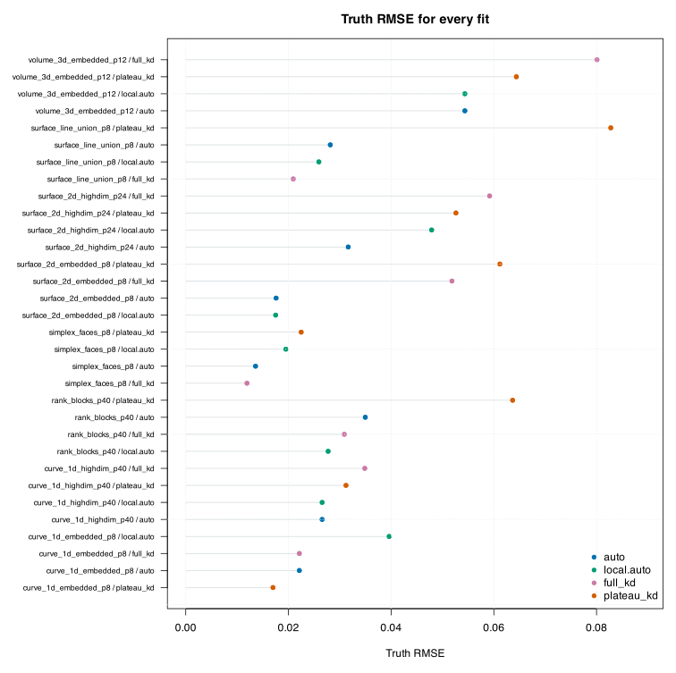
Figure 1. Truth RMSE for every method on every dataset. Each row is one full-data synthetic fit; lower values are better. The 1D and 2D rows are expanded in the All Fits gallery below, while higher-dimensional rows are summarized in tables.
Interpretation. This figure should be read as a descriptive
first comparison, not a final selector verdict. In particular, full_kd
uses response CV over many candidates, while plateau_kd chooses
its pair from geometry only. Large gaps between them identify examples where
response-facing scale choice still matters.
All Fits: Every 1D and 2D Example
Each panel below is one model-truth comparison for one 1D or 2D dataset. In 1D, the black line is the known truth, gray points are the noisy observations, and the colored line is the fitted estimate. In 2D, the first panel shows the truth, the second panel shows the estimate on the same color scale, and the third panel shows estimate minus truth.
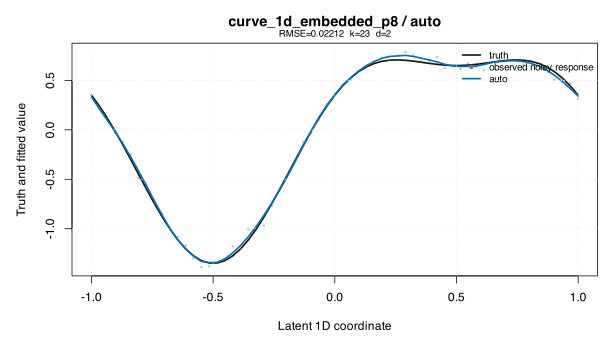
Figure 2. curve_1d_embedded_p8 fitted by auto. The figure shows the known synthetic truth and the fitted LPS estimate. The goodness-of-fit statistics for this panel are Truth RMSE = 0.02212, Truth MAE = 0.01788, selected support size k = 23, and selected chart dimension d = 2.
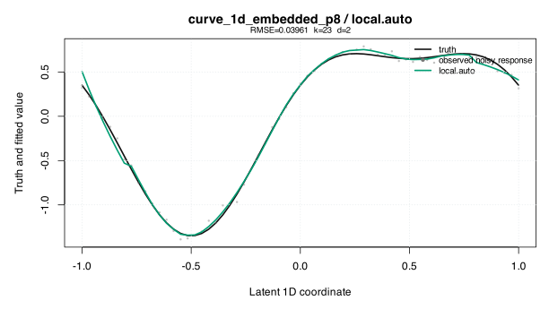
Figure 3. curve_1d_embedded_p8 fitted by local.auto. The figure shows the known synthetic truth and the fitted LPS estimate. The goodness-of-fit statistics for this panel are Truth RMSE = 0.03961, Truth MAE = 0.02712, selected support size k = 23, and selected chart dimension d = 2.
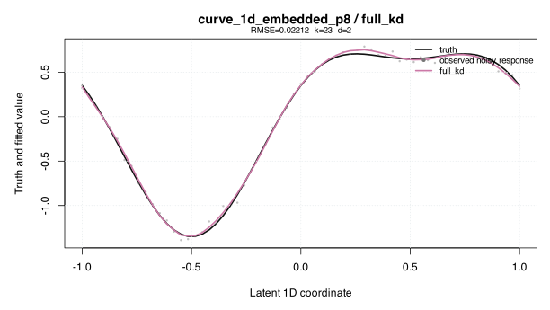
Figure 4. curve_1d_embedded_p8 fitted by full_kd. The figure shows the known synthetic truth and the fitted LPS estimate. The goodness-of-fit statistics for this panel are Truth RMSE = 0.02212, Truth MAE = 0.01788, selected support size k = 23, and selected chart dimension d = 2.
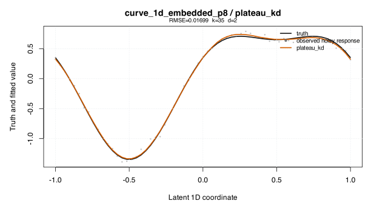
Figure 5. curve_1d_embedded_p8 fitted by plateau_kd. The figure shows the known synthetic truth and the fitted LPS estimate. The goodness-of-fit statistics for this panel are Truth RMSE = 0.01699, Truth MAE = 0.01425, selected support size k = 35, and selected chart dimension d = 2.
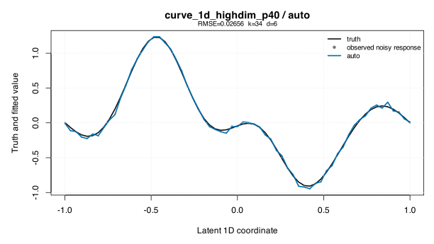
Figure 6. curve_1d_highdim_p40 fitted by auto. The figure shows the known synthetic truth and the fitted LPS estimate. The goodness-of-fit statistics for this panel are Truth RMSE = 0.02656, Truth MAE = 0.0214, selected support size k = 34, and selected chart dimension d = 6.
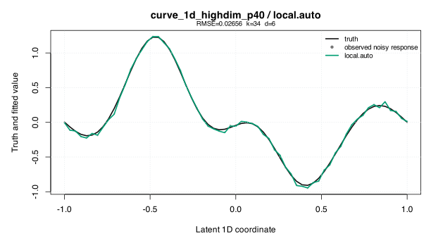
Figure 7. curve_1d_highdim_p40 fitted by local.auto. The figure shows the known synthetic truth and the fitted LPS estimate. The goodness-of-fit statistics for this panel are Truth RMSE = 0.02656, Truth MAE = 0.0214, selected support size k = 34, and selected chart dimension d = 6.
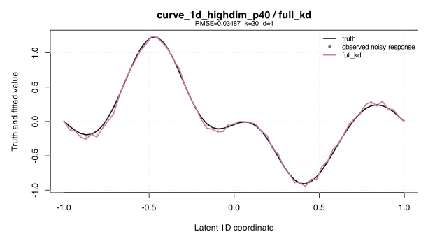
Figure 8. curve_1d_highdim_p40 fitted by full_kd. The figure shows the known synthetic truth and the fitted LPS estimate. The goodness-of-fit statistics for this panel are Truth RMSE = 0.03487, Truth MAE = 0.0266, selected support size k = 30, and selected chart dimension d = 4.
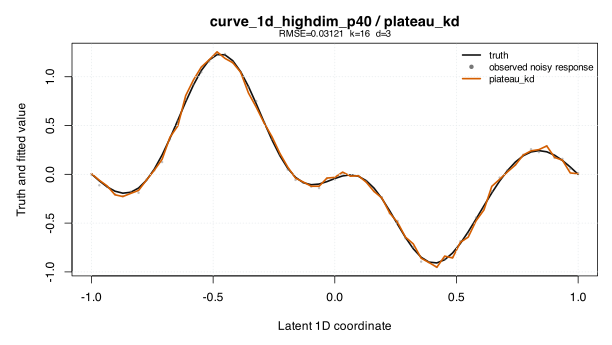
Figure 9. curve_1d_highdim_p40 fitted by plateau_kd. The figure shows the known synthetic truth and the fitted LPS estimate. The goodness-of-fit statistics for this panel are Truth RMSE = 0.03121, Truth MAE = 0.02483, selected support size k = 16, and selected chart dimension d = 3.
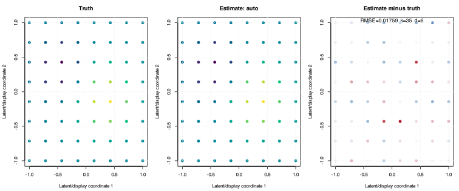
Figure 10. surface_2d_embedded_p8 fitted by auto. The figure shows the known synthetic truth and the fitted LPS estimate. The goodness-of-fit statistics for this panel are Truth RMSE = 0.01759, Truth MAE = 0.01342, selected support size k = 35, and selected chart dimension d = 6.
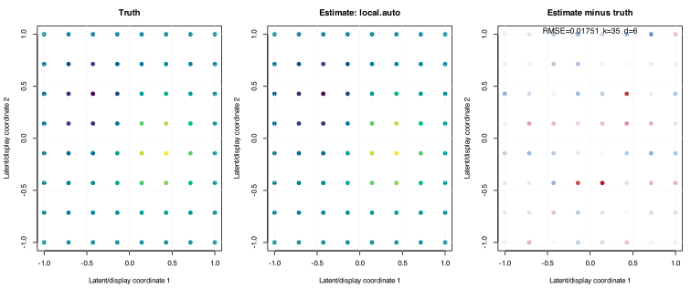
Figure 11. surface_2d_embedded_p8 fitted by local.auto. The figure shows the known synthetic truth and the fitted LPS estimate. The goodness-of-fit statistics for this panel are Truth RMSE = 0.01751, Truth MAE = 0.01327, selected support size k = 35, and selected chart dimension d = 6.
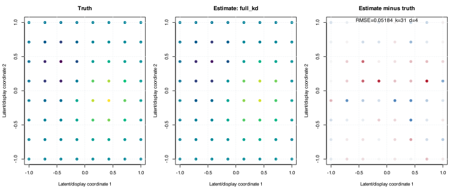
Figure 12. surface_2d_embedded_p8 fitted by full_kd. The figure shows the known synthetic truth and the fitted LPS estimate. The goodness-of-fit statistics for this panel are Truth RMSE = 0.05184, Truth MAE = 0.03593, selected support size k = 31, and selected chart dimension d = 4.
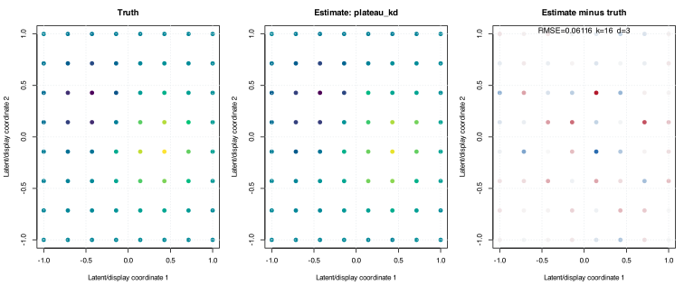
Figure 13. surface_2d_embedded_p8 fitted by plateau_kd. The figure shows the known synthetic truth and the fitted LPS estimate. The goodness-of-fit statistics for this panel are Truth RMSE = 0.06116, Truth MAE = 0.03997, selected support size k = 16, and selected chart dimension d = 3.
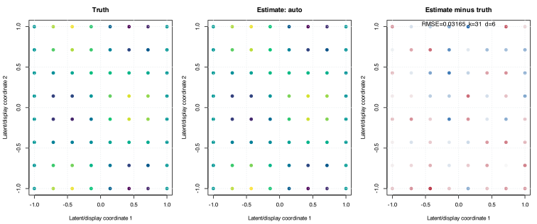
Figure 14. surface_2d_highdim_p24 fitted by auto. The figure shows the known synthetic truth and the fitted LPS estimate. The goodness-of-fit statistics for this panel are Truth RMSE = 0.03165, Truth MAE = 0.0264, selected support size k = 31, and selected chart dimension d = 6.
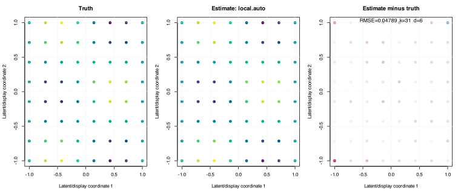
Figure 15. surface_2d_highdim_p24 fitted by local.auto. The figure shows the known synthetic truth and the fitted LPS estimate. The goodness-of-fit statistics for this panel are Truth RMSE = 0.04789, Truth MAE = 0.03242, selected support size k = 31, and selected chart dimension d = 6.
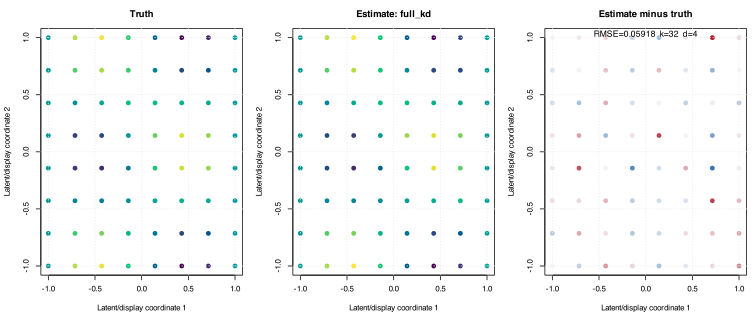
Figure 16. surface_2d_highdim_p24 fitted by full_kd. The figure shows the known synthetic truth and the fitted LPS estimate. The goodness-of-fit statistics for this panel are Truth RMSE = 0.05918, Truth MAE = 0.04518, selected support size k = 32, and selected chart dimension d = 4.
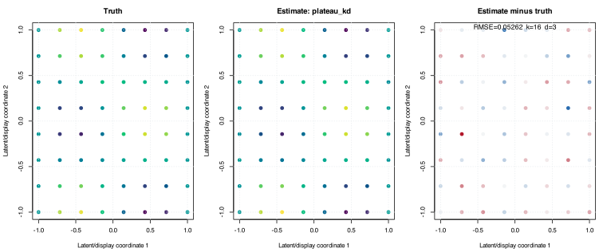
Figure 17. surface_2d_highdim_p24 fitted by plateau_kd. The figure shows the known synthetic truth and the fitted LPS estimate. The goodness-of-fit statistics for this panel are Truth RMSE = 0.05262, Truth MAE = 0.04154, selected support size k = 16, and selected chart dimension d = 3.
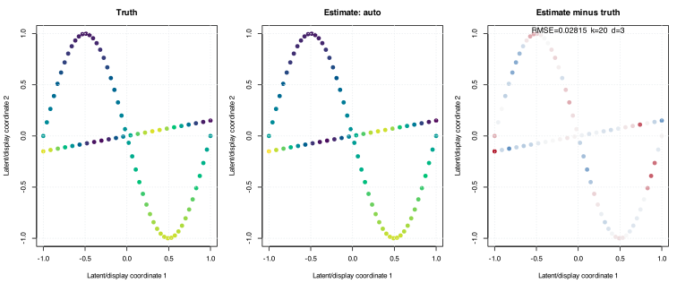
Figure 18. surface_line_union_p8 fitted by auto. The figure shows the known synthetic truth and the fitted LPS estimate. The goodness-of-fit statistics for this panel are Truth RMSE = 0.02815, Truth MAE = 0.01974, selected support size k = 20, and selected chart dimension d = 3.
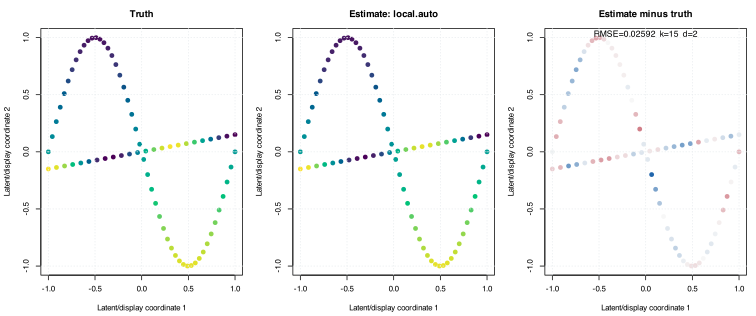
Figure 19. surface_line_union_p8 fitted by local.auto. The figure shows the known synthetic truth and the fitted LPS estimate. The goodness-of-fit statistics for this panel are Truth RMSE = 0.02592, Truth MAE = 0.0197, selected support size k = 15, and selected chart dimension d = 2.
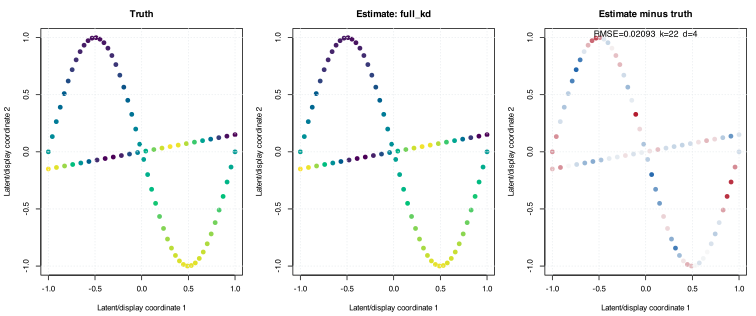
Figure 20. surface_line_union_p8 fitted by full_kd. The figure shows the known synthetic truth and the fitted LPS estimate. The goodness-of-fit statistics for this panel are Truth RMSE = 0.02093, Truth MAE = 0.01641, selected support size k = 22, and selected chart dimension d = 4.
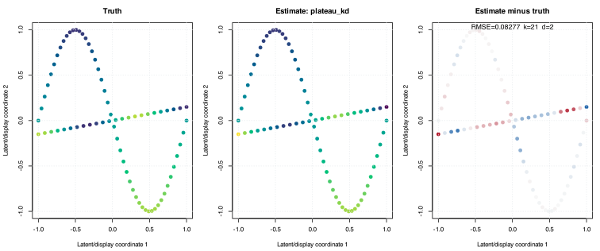
Figure 21. surface_line_union_p8 fitted by plateau_kd. The figure shows the known synthetic truth and the fitted LPS estimate. The goodness-of-fit statistics for this panel are Truth RMSE = 0.08277, Truth MAE = 0.05225, selected support size k = 21, and selected chart dimension d = 2.
Higher-Dimensional Summary
The remaining examples are not shown as direct surfaces because their geometry is three-dimensional, simplex-boundary, or high-dimensional block structure. The table retains the same goodness-of-fit and selected-parameter columns used for the plotted examples.
| dataset.id | method.id | status | truth.rmse | truth.mae | truth.correlation | observed.rmse | selected.support.size | selected.chart.dim | chart.dim.anchor.min | chart.dim.anchor.median | chart.dim.anchor.max | selected.cv.rmse | elapsed.sec | evaluated.candidates |
|---|---|---|---|---|---|---|---|---|---|---|---|---|---|---|
| volume_3d_embedded_p12 | auto | ok | 0.05436 | 0.0349 | 0.9522 | 0.05485 | 15 | 3 | 3 | 3 | 3 | 0.3888 | 1.487 | 21 |
| volume_3d_embedded_p12 | local_auto | ok | 0.05436 | 0.0349 | 0.9522 | 0.05485 | 15 | 3 | 3 | 3 | 3 | 0.3888 | 1.891 | 21 |
| volume_3d_embedded_p12 | full_kd | ok | 0.08009 | 0.04732 | 0.9053 | 0.08096 | 21 | 1 | 1 | 1 | 1 | 0.1485 | 1.86 | 101 |
| volume_3d_embedded_p12 | plateau_kd | ok | 0.06439 | 0.03561 | 0.9281 | 0.06492 | 16 | 3 | 3 | 3 | 3 | 0.325 | 0.203 | 1 |
| simplex_faces_p8 | auto | ok | 0.01359 | 0.009303 | 0.9994 | 0.01876 | 29 | 3 | 3 | 3 | 3 | 0.03091 | 1.017 | 21 |
| simplex_faces_p8 | local_auto | ok | 0.01949 | 0.0109 | 0.9988 | 0.02324 | 34 | 3 | 2 | 3 | 4 | 0.02785 | 1.582 | 21 |
| simplex_faces_p8 | full_kd | ok | 0.01193 | 0.008487 | 0.9995 | 0.01339 | 17 | 4 | 4 | 4 | 4 | 0.02545 | 1.481 | 101 |
| simplex_faces_p8 | plateau_kd | ok | 0.02248 | 0.01464 | 0.9984 | 0.02611 | 24 | 2 | 2 | 2 | 2 | 0.113 | 0.159 | 1 |
| rank_blocks_p40 | auto | ok | 0.03496 | 0.02614 | 0.9989 | 0.03294 | 34 | 5 | 5 | 5 | 5 | 0.2322 | 2.182 | 21 |
| rank_blocks_p40 | local_auto | ok | 0.02773 | 0.02152 | 0.9993 | 0.02248 | 35 | 5 | 4 | 5 | 6 | 0.1201 | 2.793 | 21 |
| rank_blocks_p40 | full_kd | ok | 0.03088 | 0.02465 | 0.9991 | 0.01792 | 35 | 6 | 6 | 6 | 6 | 0.1265 | 2.668 | 101 |
| rank_blocks_p40 | plateau_kd | ok | 0.06366 | 0.04726 | 0.9968 | 0.05729 | 16 | 3 | 3 | 3 | 3 | 0.4879 | 0.223 | 1 |
What We Learned
The new plateau_kd rule is now implemented as a true
geometry-only coupled selector. It is much cheaper than full_kd
because it evaluates one selected candidate rather than the full Cartesian
grid, but this report should be used to decide whether that economy loses too
much truth-facing accuracy on particular geometries.
The most important diagnostic is the per-dataset pattern. If
plateau_kd is close to full_kd on the 1D and 2D
examples, that supports the idea that stable local dimension plateaus capture
useful scale information. If it is far away on a specific geometry, the fitted
curves and residual panels identify where a response-CV-selected support size
is still needed.
Reproducibility
The fit-generation and report-rendering steps are separated. Rerun the fits with:
Rscript ~/current_projects/geosmooth/dev/methods/lps/ci/csd_plateau_kd_comparison_run.R
Then regenerate this HTML report from the cached bundle with:
Rscript ~/current_projects/geosmooth/dev/methods/lps/ci/csd_plateau_kd_comparison_render.R
Primary linked tables: fit scores CSV and dataset manifest CSV.